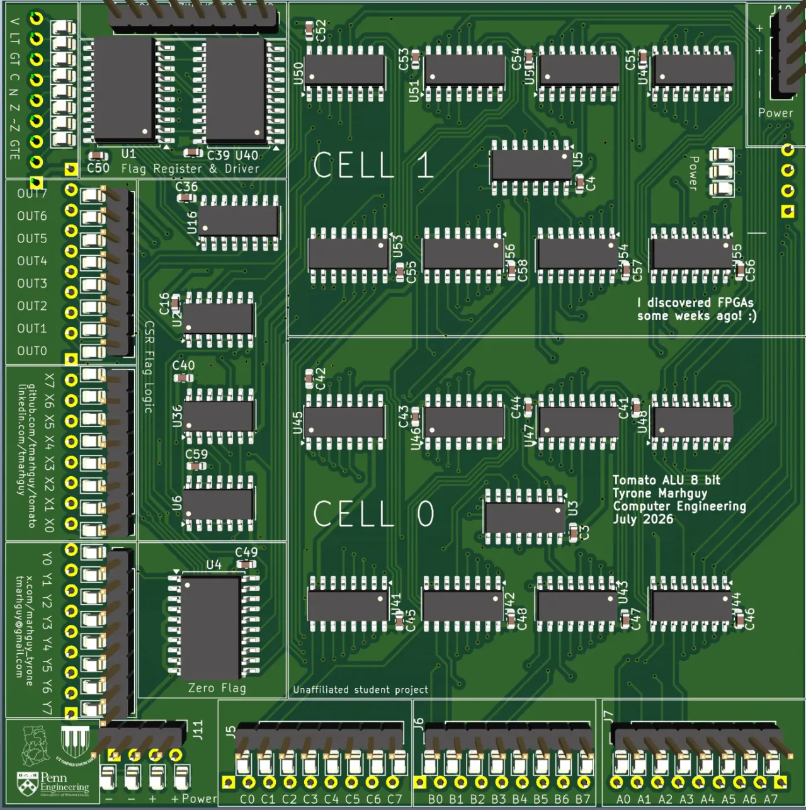
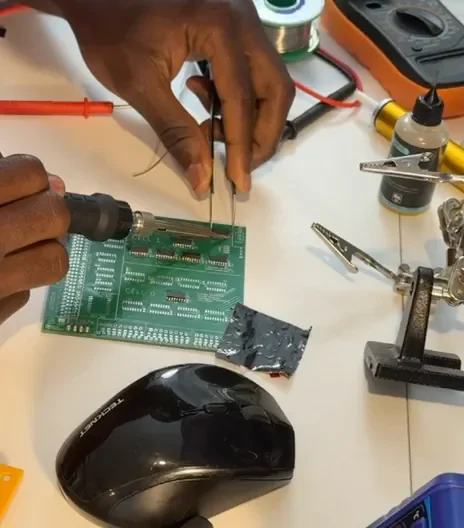

The discrete build
A computer, board by board.
I designed the architecture to be built from off-the-shelf logic and memory chips. The Lot 07 ALU board is soldered. The remaining boards are progressing alongside the software ecosystem on the working FPGA.
Transistor ALU
An 8-bit starting point: 624 discrete MOSFETs and 74HC logic. Set aside before assembly.
Explore the boardShift
The 32-bit barrel shifter and multiply path.
Explore the boardMemory
Program and data storage, byte lanes, and the framebuffer.
Explore the boardRegisters
Three reads, one write, and 32,768 banked 32-bit locations.
Explore the boardProgram counter
The address of the next instruction, branches, and control flow.
Explore the boardData bus
The shared writeback path connecting the processor’s subsystems.
Explore the boardDual-LUT ALU
Two programmable Boolean planes feeding an adder. An 8-bit slice in copper.
Explore the boardDisplay
Display timing and the remaining visual output hardware.
Explore the boardFrom the build
The work behind the words.
{kind=link}

Assembly of the discrete ALU, one package at a time.

Lot 07 on the bench during board testing.